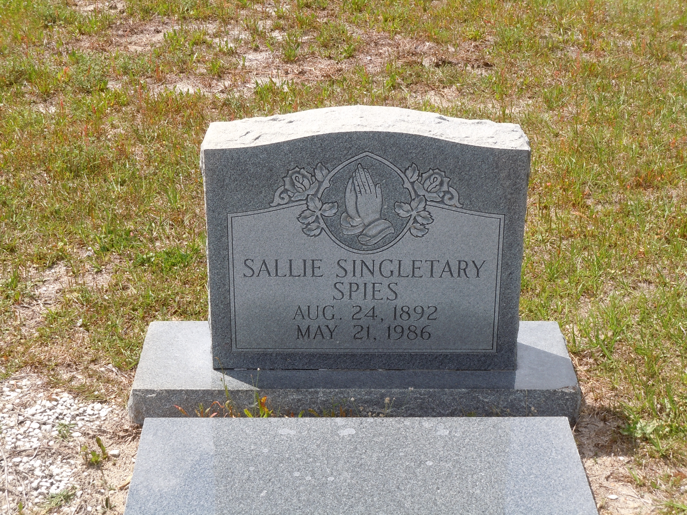

Sallie Sarah Singletary
1892–1986
Life Events
Born: August 24, 1892 — Florida
Died: May 21, 1986 — Live Oak, Suwannee County, Florida
Family
Father: Jacob A. Singletary
Mother: Ida Alla Miller
Siblings
Military Service
No military service information has been added.
Biography
Sallie Sarah Singletary Spies was born on August 24, 1892, in Florida, the daughter of Reverend Jacob A. Singletary (1852–1931) and Ida Alla Miller Singletary (1873–1945). Her gravestone and Florida death certificate agree on her birth date. Although she appears as Sarah in early census records and Sallie in later records, her 1986 death certificate identifies her as Sallie Sarah Spies. Her obituary identifies her as a native of Lafayette County, Florida, where she spent much of her life.
Sallie grew up in Lafayette County, Florida, where her father worked as a farmer and was also identified as a minister. The 1900 United States Federal Census records her in her parents' household, with her birth listed as August 1892. Her siblings in the household included Eliza E., William Robert, Emma, and Henry Singletary.
Sallie continued living in Lafayette County during her childhood and early adulthood. She appears in her parents' household in the 1910 and 1920 federal censuses. The 1920 census records her as twenty-three years old, although her established birth date indicates that she was twenty-seven at the time. Such differences in reported ages occur elsewhere in the family's census records.
On May 2, 1920, Sallie Singletary married Horace W. Spies in Lafayette County, Florida. Their original marriage license was issued on May 1, 1920, by County Judge Hall W. Adams at the courthouse in Mayo. The marriage ceremony was performed the following day by J. J. Fannell, M.G., with J. R. Banks and Will Evans serving as witnesses. The marriage was filed and recorded on June 2, 1920, in Lafayette County Marriage License Record E, page 459.
The 1930 United States Federal Census appears to list Sallie in the household of her parents, Jacob and Ida Singletary, in the Day community of Lafayette County. She was recorded under the Singletary surname and apparently identified as single, despite her documented marriage to Horace Spies ten years earlier. The reason for this discrepancy has not been established. It is possible that the marriage had already ended or that the census information was recorded incorrectly, but neither explanation has been confirmed.
Following the death of her father on May 14, 1931, Sallie continued living in the Lafayette County community. The 1940 United States Federal Census records Sally Spies, age forty-seven, living in the household of her widowed mother, Ida Singletary. Her brothers Robert, Henry, and Giddy were also members of the household. Sallie was recorded as widowed, although her 1986 Florida death certificate later identified her marital status as divorced. The circumstances surrounding the end of her marriage to Horace W. Spies remain uncertain, and no divorce record or death record for Horace has yet been established.
Sallie remained connected to her siblings throughout her adult life. She was identified as a surviving sister in the February 1961 obituary of her brother William Robert Singletary. The obituary listed Mrs. Sally Spies of Lafayette County, Florida, along with her sisters Eliza Bell and Emma Evans and brothers Henry, Giddy, Jamie, and Jasper Singletary. This record confirms that she continued using the Spies surname more than forty years after her marriage.
In her later years, Sallie lived in Live Oak, Suwannee County, Florida. Her 1986 Florida death certificate records her usual residence as 1120 Helvenston in Live Oak and lists her occupation as homemaker. She was also a member of Bethel Creek Baptist Church, reflecting her continued association with the Lafayette County community where she had grown up and where several members of her family were buried.
Sallie died on Wednesday, May 21, 1986, at Suwannee County Hospital in Live Oak, Florida, following a long illness. She was ninety-three years old. Her Florida death certificate identifies her parents as Jacob Singletary and Ida Miller and records her marital status as divorced. The informant was Gid Singletary of Mayo, Florida.
Her obituary, published in The Florida Times-Union on May 23, 1986, identifies her as Sallie Singletary Spies, age ninety-three, of Live Oak. It describes her as a native of Lafayette County, a homemaker, and a member of Bethel Creek Baptist Church. The obituary identifies her surviving brother as Gid Singletary of Mayo, Florida. This provides additional evidence that Gid was the brother identified as Giddy or Giddie Singletary in earlier census records and in William Robert Singletary's 1961 obituary. Although the obituary names no other surviving siblings, their death dates must be established through separate records.
Funeral services were scheduled for 3:00 p.m. on May 23, 1986, at Bethel Creek Baptist Church, followed by burial in the church cemetery. Daniels Funeral Home of Live Oak was responsible for the arrangements. Sallie's gravestone at Bethel Creek Baptist Church Cemetery identifies her as Sallie Singletary Spies and records her birth on August 24, 1892, and death on May 21, 1986. These dates agree with her Florida death certificate.
Photos
No additional photographs have been added.
Grave & Burial

Bethel Creek Baptist Church Cemetery, Lafayette County, Florida
Sources
-
1910 United States Federal Census – Jacob A. Singletary Household
Type: censusThe 1910 United States Federal Census records Jacob Singletary and his wife Ida living in Precinct 1, Lafayette County, Florida, with six children: Sallie, Robert, Emma, Henry, Giddy, and Jamie. The household appears on lines 39–46 of Enumeration District 64, Sheet 10A. The census provides evidence of the family's continued residence in Lafayette County and identifies younger children Giddy and Jamie, who were subsequently named as surviving brothers in William Robert Singletary's 1961 obituary.
Location: Precinct 1, Lafayette County, Florida
Supports: Jacob and Ida Singletary living in Lafayette County in 1910, Sallie, Robert, Emma, Henry, Giddy, and Jamie recorded in the household, Giddy and Jamie identified as sons of Jacob and Ida, William Robert Singletary recorded as Robert in the household
-
1920 United States Federal Census – Jacob A. Singletary Household
Type: censusThe 1920 United States Federal Census records Jacob A. Singletary, age 68, and his wife Ida, age 46, living in Precinct 1, Lafayette County, Florida. Their household includes Sallie, age 23; Robert, age 22; Henry, age 20; Jasper, age 18; Jamie, age 14; and Giddie, age 8. Robert is identified as William Robert Singletary through other family records. His reported age in this census conflicts with the May 3, 1894, birth date recorded on his death certificate and gravestone. The census provides evidence of the continued residence of Jacob and Ida's family in Lafayette County and helps identify younger sons Jasper, Jamie, and Giddie, who were later named in William Robert's 1961 obituary.
Location: Precinct 1, Lafayette County, Florida
Supports: Jacob A. Singletary and Ida living in Lafayette County in 1920, Sallie, Robert, Henry, Jasper, Jamie, and Giddie recorded as children in the household, Jacob's age recorded as 68, Robert's age recorded as 22, Jamie identified as a son, age 14, Jasper and Giddie identified as sons of Jacob and Ida
-
1920 Marriage License of Horace W. Spies and Sallie Singletary
Type: marriageOriginal Lafayette County, Florida, marriage license documenting the marriage of Horace W. Spies and Sallie Singletary. The license was issued on May 1, 1920, by County Judge Hall W. Adams. The marriage ceremony was performed on May 2, 1920, by J. J. Fannell, M.G., in the presence of witnesses J. W. Burke and Will Evans. The marriage was filed and recorded on June 2, 1920, in Marriage License Record E, page 459. The document establishes Sallie's marriage to Horace W. Spies and provides the basis for identifying her under the Spies surname in later records.
Location: Mayo, Lafayette County, Florida
Supports: Marriage of Sallie Singletary and Horace W. Spies on May 2, 1920, Marriage license issued May 1, 1920, in Lafayette County, Florida, Marriage ceremony performed by J. J. Fannell, Marriage recorded June 2, 1920, in Lafayette County Marriage License Record E, page 459, Identification of Horace W. Spies as Sallie's husband
-
1930 United States Federal Census – Jacob A. Singletary Household
Type: censusThe 1930 United States Federal Census records Jacob A. Singletary, age 76, and his wife Ida, age 54, living in First Precinct, Day, Lafayette County, Florida. Their household includes William R. Singletary, age 32; Henry Singletary, age 29; Jamie Singletary, age 23; Giddie Singletary, age 16; and Sallie Singletary, age 31. Jacob was recorded as a farmer. William, Henry, and Jamie worked as laborers at a sawmill, while Giddie was employed as a farm laborer. William's reported age suggests a birth around 1897–1898, conflicting with the May 1894 birth recorded in the 1900 census and the May 3, 1894, date on his death certificate and gravestone. This census documents the family shortly before Jacob's death in 1931.
Location: First Precinct, Day, Lafayette County, Florida
Supports: Jacob A. Singletary and Ida living in Lafayette County in 1930, William R., Henry, Jamie, Giddie, and Sallie recorded in the household, Jacob's occupation recorded as farmer, William, Henry, and Jamie employed as sawmill laborers, William's age recorded as 32, Continued residence of Jacob and Ida's family in Lafayette County
-
1940 United States Federal Census – Ida Singletary Household
Type: censusThe 1940 United States Federal Census records Ida Singletary, age 66, as a widowed head of household in Precinct One, Lafayette County, Florida. Living with her were her sons Robert Singletary, age 45; Henry Singletary, age 40; Giddy Singletary, age 27; and her daughter Sally Spies, age 47. Sally was also recorded as widowed. A Florida marriage index records the marriage of Sallie Singletary and Horace W. Spies on May 1, 1920. The census establishes that Sally was widowed by April 1940, although the date of her husband's death remains unknown. Robert's reported age is consistent with his documented birth date of May 3, 1894.
Location: Precinct One, Lafayette County, Florida
Supports: Ida Singletary living in Lafayette County in 1940, Ida recorded as widowed following Jacob's death in 1931, Robert, Henry, and Giddy identified as Ida's sons, Sally Spies identified as Ida's daughter, Sally Spies recorded as widowed by April 1940, Robert Singletary recorded as age 45
-
1986 Florida Death Certificate of Sallie Sarah Spies
Type: deathFlorida Certificate of Death, Certificate No. 86-055507, documenting the death of Sallie Sarah Spies on May 21, 1986, at Suwannee Hospital in Live Oak, Suwannee County, Florida. The certificate records her birth on August 24, 1892, in Florida, and identifies her parents as Jacob Singletary and Ida Miller. Sallie was recorded as ninety-three years old, divorced, and a homemaker. Her usual residence was 1120 Helvenston in Live Oak, Florida. Gid Singletary was identified as the informant. The certificate records burial at Bethel Creek Cemetery in Mayo, Florida. Her recorded marital status of divorced differs from the 1940 federal census, which identified her as widowed; this discrepancy remains unresolved.
Location: Live Oak, Suwannee County, Florida
Supports: Sallie Sarah Spies born August 24, 1892, in Florida, Sallie Sarah Spies died May 21, 1986, in Live Oak, Suwannee County, Florida, Jacob Singletary identified as Sallie's father, Ida Miller identified as Sallie's mother, Sallie's marital status recorded as divorced in 1986, Sallie's occupation recorded as homemaker, Gid Singletary identified as the informant, Burial at Bethel Creek Cemetery in Mayo, Florida
-
1986 Obituary of Sallie Singletary Spies – The Florida Times-Union
Type: obituaryObituary published in The Florida Times-Union on May 23, 1986, reporting the death of Sallie Singletary Spies, age 93, of Live Oak, Florida. Sallie died on May 21, 1986, at Suwannee County Hospital following a long illness. The obituary identifies her as a native of Lafayette County, a homemaker, and a member of Bethel Creek Baptist Church. Her surviving brother was identified as Gid Singletary of Mayo, Florida. Funeral services were scheduled for May 23, 1986, at Bethel Creek Baptist Church, followed by burial in the church cemetery. Daniels Funeral Home of Live Oak handled the arrangements.
Location: Live Oak, Suwannee County, Florida
Supports: Sallie Singletary Spies died May 21, 1986, Sallie was 93 years old at death, Sallie was a native of Lafayette County, Florida, Sallie resided in Live Oak, Florida, Sallie was a homemaker, Sallie was a member of Bethel Creek Baptist Church, Gid Singletary identified as Sallie's surviving brother, Funeral services scheduled at Bethel Creek Baptist Church on May 23, 1986, Burial at Bethel Creek Baptist Church Cemetery